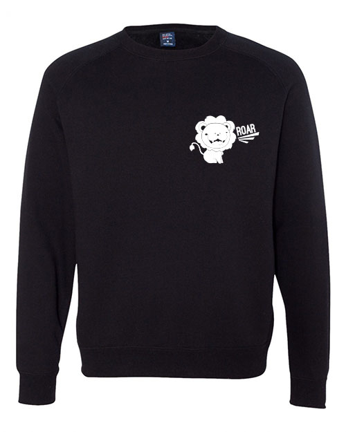
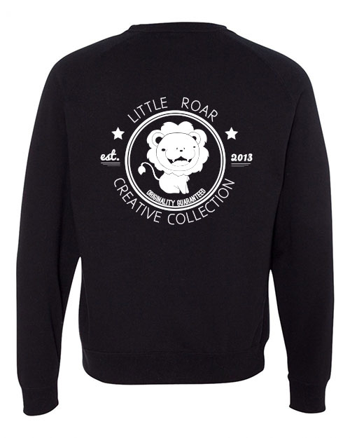

Lion Sweatshirts
Print/ Screen Printing & Production
Illustrator
During my specialty printing internship at University Graphic Systems, I was given the opportunity to design and produce my own clothing. I decided to brand one of my lion sketches that I penned with paper and scanned into Adobe Illustrator. I created a back design and a breast pocket design to put on the front of the sweatshirts. Since our designs could only be one color, I chose a dark colored sweatshirt and with white ink so that the image would pop on the sweatshirt.

Front & Back

